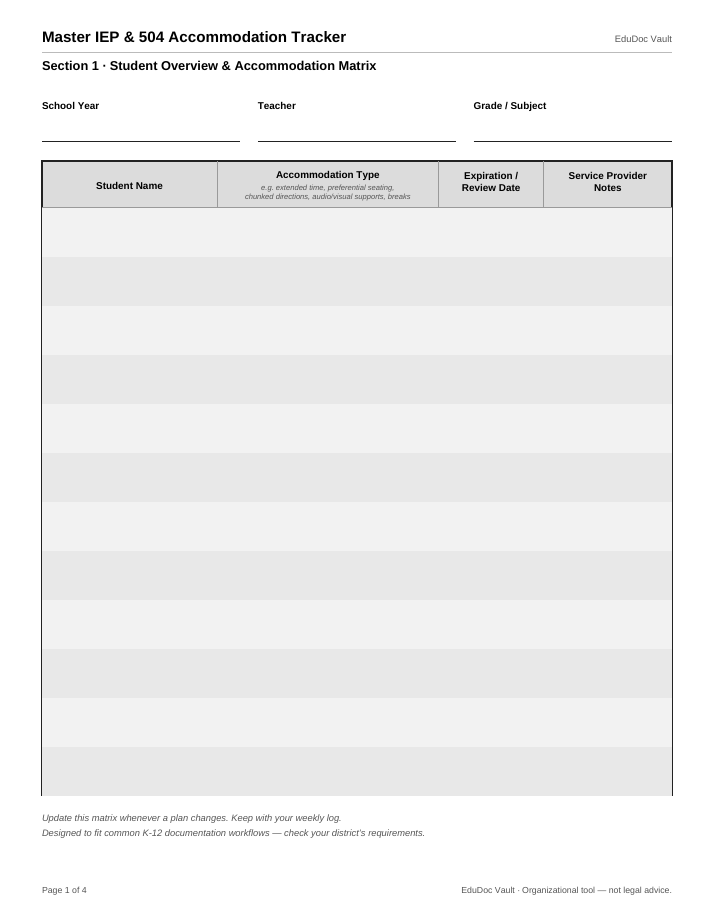

Special Education
Master IEP & 504 Accommodation Tracker
Stop juggling sticky notes and half-remembered emails. One tracker holds every accommodation in one place, with Provided / Refused / N-A documentation on each entry and a 25-item accommodation bank so nothing starts from scratch. The daily log proves what was actually provided — in minutes a week, not hours.
$14.99
Read a free sample (PDF)